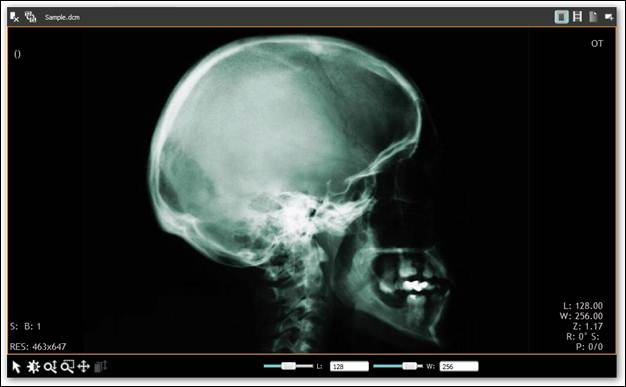

Essential DICOM is a 100% native .NET library that converts the standard image formats to the DICOM format (.dcm). Essential DICOM is a solution for users who need to convert the ordinary image formats namely JPEG, BMP, PNG, EMF, TIFF, GIF to the DICOM format. It requires a DICOM Viewer or an equivalent viewer to view the converted DICOM image.
The following image shows the converted DICOM Image using Essential DICOM.

Figure 5: Converted DICOM Image